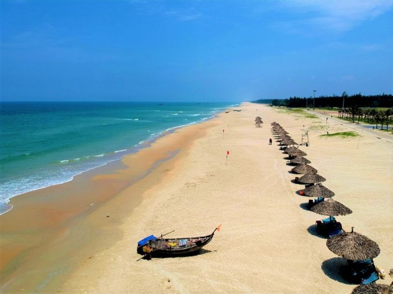
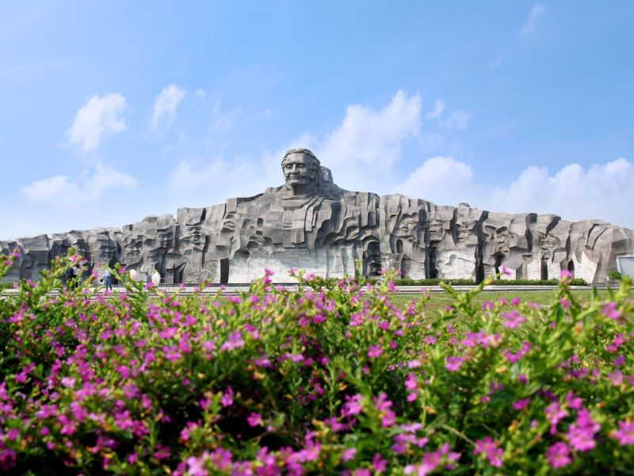

About
If you ever visit Tam Ky, my hometown, I highly recommend trying these three popular street foods. They are delicious, affordable, and loved by both locals and visitors.
Hover over an image below to display here.
Gallery



